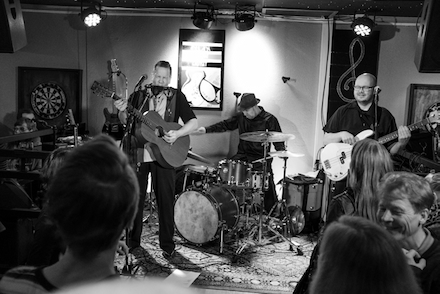

Mangler du information
Festivalens information ligger i Lille Kongensgade 6 i Aalborg Cityforenings kontor. Kig ind og få vejledning og måske et program. Find festivalflaget på gaden. Kontoret har åbent torsdag, fredag og lørdag i festivalugen fra ca. kl. 17.00 - 20.00.
Har du nogle spørgsmål uden for festivialugen, tag kontakt til Søren Lindholt Hansen på slh@rulleguitar.dk.
Frivillig til Den Blå Festival
Kan du lide at lytte til og se Fed Blues og Swingende Jazz påp allernærmeste hold? Så er det her!
Vi kan godt bruge flere frivillige til at afvikle festivalen. Som frivillig kan du f.eks. være bartender, praktisk med hjælp på Festivalkontoret, merchandise-sælger, opstiller/nedtager af festivalpladsen eller øl-klusk.
Festivallen afvikles i uge 33 (midt i august). Er du interesseret, så send en email til Torben Lund på vejrholt@lund.mail.dk med angivelse af navn og tlf. nr.

Ønsker du at spille til Den Blå Festival?
Kan du lide at spille jazz eller blues og gerne vil give andre muligheden for at høre dig? Så kom og giv en koncert til Den Blå Festival!
Vedrørende blues og relaterede musik: aalborgblues@gmail.com
Vedrørende jazz og relaterede musik: Jazzclub Satchmo: poulerik@broberg.dk
Mailing address: c/o Kaerlundsvej 26, DK9000 Aalborg
Kontakt de ansvarlige på spillestederne
- D'Wine bar: aalborgblues@gmail.com
- Salling rooftop: aalborgblues@gmail.com
- Jazzscenen hos Portalen: poulerik@broberg.dk
- KaffeFair: aalborgblues@gmail.com
- Stargate scenen: poulerik@broberg.dk